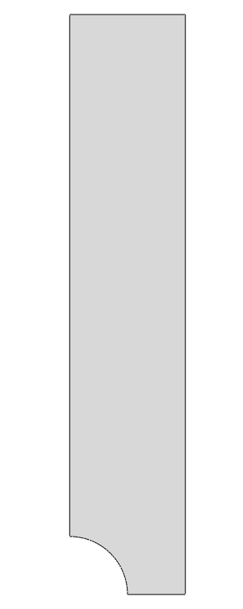
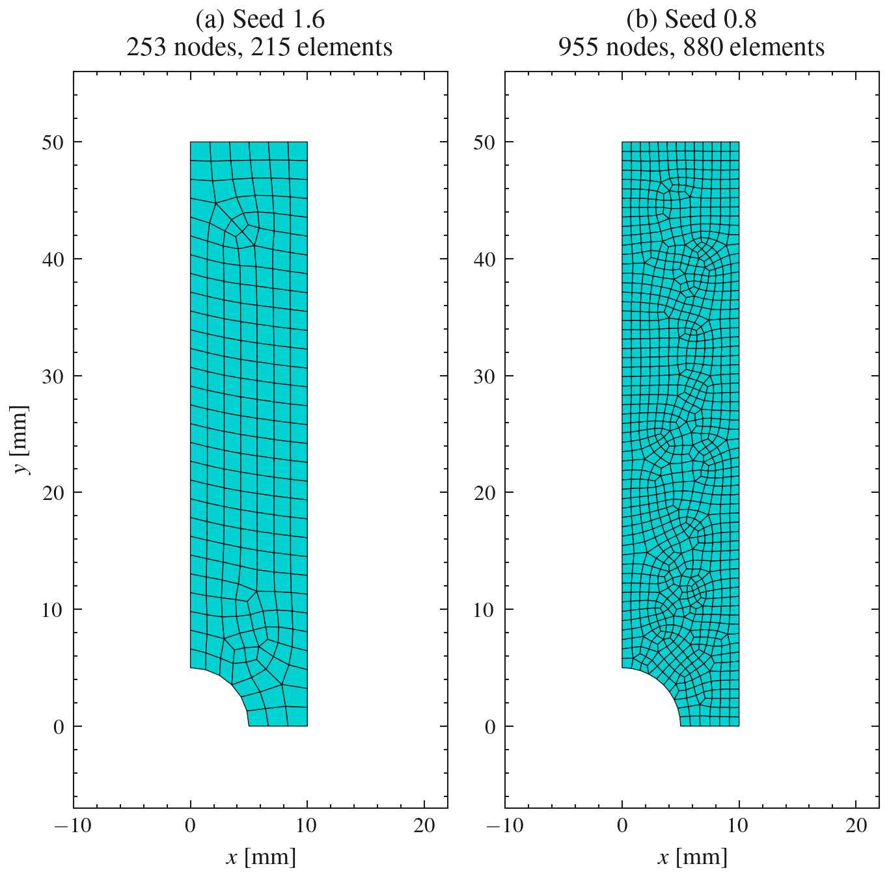
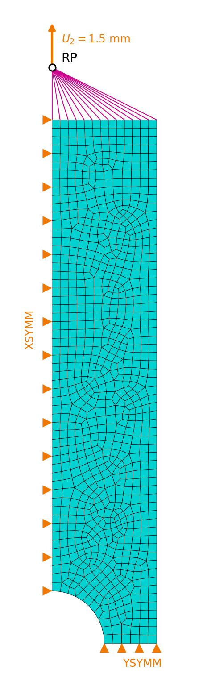

Part 2: Taking Advantage of Symmetries
Taking advantage of symmetries and ways of applying loads
As we saw in Part 1: Setting a Quick Model, we can easily perform an Abaqus simulation in just a couple of steps. However, there are a few improvements we can make (as always). We could see the following issues:
- From the simulation results we could see symmetry planes which we could take advantage of;
- The mesh was too coarse, so the stress output was poorly defined.
In this specific case, we are going to cover the first point. The second one is covered in the next part of this tutorial series in Part 3: Getting a Good Mesh.
Hopefully, you won’t mind too much the continuity error between the first tutorial and this one. Previously, the plate was oriented horizontally and now it is oriented vertically. Hopefully, you can also see that it is exactly the same problem, just rotated. Regardless, I promise the following tutorials will be consistent with each other. Continuing to the tutorial. If we look at our plate, we can easily identify at least two symmetry planes according to \(x\) and \(y\) as shown in Figure 1 .
The strength of this is that it allows us to perform the same calculation in a much smaller domain. This allows us to save computational time, or to get much more refined results for the same computational time by using a much finer mesh.

🧩 Setting up the model
Most of the steps covered here are the same as in Part 1: Setting a Quick Model, so if you are in doubt, refer to that one. For now, we are using exactly the same dimensions and material, which are presented next for convenience.
| ⚙️ Parameter | 📏 Value |
|---|---|
| Plate length, \(L\) | 100 mm |
| Plate height, \(H\) | 20 mm |
| Hole diameter, \(D\) | 10 mm |
| Material | Property | Symbol | Value | Unit | Notes |
|---|---|---|---|---|---|
| PMA | Young’s modulus | \(E\) | 3000 | MPa | Isotropic elastic |
| Poisson’s ratio | \(\nu\) | 0.4 | – |
For this case, we are creating a 2D planar deformable part. By sketching a simple rectangle of \(L/2 \times H/2 = 50 \times 10\) mm (as shown in Part 1: Setting a Quick Model) and then making an extruded cut of the hole, we obtain the geometry shown below.
Here, you can make an extruded cut of a hole using the extrude cut button . Or you can create a partition using the partition button and then delete the extra face. You can also include the quarter of the hole already in your initial sketch.

Then, it is just a matter of following the same steps as Part 1: Setting a Quick Model to set up a material and a section. Then, as before, we can now mesh it with the same global seed size of 1.6.

Notice that the quarter model has roughly a quarter of the elements of the full plate from Part 1: Setting a Quick Model. For a model this small it does not really matter, but for a large 3D model this is the difference between a simulation running in minutes or in hours. The other way to look at it is that, for the same number of elements as the full plate, we can halve the seed size and get a much finer mesh (b).
| Model | Seed size | Nodes | Elements |
|---|---|---|---|
| Full plate | 1.6 | 937 | 869 |
| Quarter plate | 1.6 | 253 | 215 |
| Quarter plate | 0.8 | 955 | 880 |
For the rest of this tutorial we use the finer mesh with a seed of 0.8 which will give us better results.
🧷 Boundary Conditions: Symmetry
When we cut the plate along the two symmetry planes, we are removing material that was holding the remaining quarter in place. So we need to replace that missing material with boundary conditions that reproduce its effect.
In the full plate, the points lying on a symmetry plane cannot move across it. If a point on the vertical symmetry line moved to the right, then by symmetry its mirror image would have to move to the left. Therefore:
- On the edge lying on the vertical symmetry line (\(x = 0\)), the displacement normal to it is zero: \(u_x = 0\).
- On the edge lying on the horizontal symmetry line (\(y = 0\)), the displacement normal to it is zero: \(u_y = 0\).
This is shown in Figure 1
As before, we first need a step (see Part 1: Setting a Quick Model) and name it loading_step. The symmetry conditions, however, are not loads, they are part of the initial conditions of the model. So we create them in the Initial step, which means they are active from the very beginning and are propagated to all the following steps.
In the Load module, click the boundary condition icon  and select (see Part 1: Setting a Quick Model if you don’t remember):
and select (see Part 1: Setting a Quick Model if you don’t remember):
Pick the edge on the vertical symmetry line (\(x = 0\)) and choose XSYMM. Then repeat the procedure for the edge on the horizontal symmetry line (\(y = 0\)) and choose YSYMM. You could also use the plain Displacement/Rotation boundary condition and set U1 = 0 (or U2 = 0) yourself. The result is exactly the same for 2D. Give it a try and see!
🏋️ Ways of Applying the Load
Now we need to pull the plate. In Part 1: Setting a Quick Model we applied \(\pm 1.5\) mm on both ends of the plate. Since the bottom edge of our quarter now sits on the symmetry plane and does not move vertically, we only need to pull the top edge by \(+1.5\) mm. There are two ways of doing this.
Option 1: Displacement on the edge
This is exactly what we did in Part 1. You can create a boundary condition in loading_step and apply on the top edge the displacement of \(+1.5\) mm.
It works, but the load is spread over all the nodes of the edge. If you want to know the total force needed to pull the plate, you have to sum the reaction forces of every node yourself. This would be possible but tedious.
Option 2: Reference point with a kinematic coupling
A much nicer and more elegant way is to control the whole edge from a single point. We create a reference point (RP), tie the top edge to it with a kinematic coupling, and then apply the displacement only to the RP. This means that wherever the RP goes, the edge follows. If you do not know what a kinematic coupling is, do not worry see the Abaqus coupling documentation for details. But all you need to know is that this coupling connects the displacements of the RP to the upper edge. So, for now, what we need to do is:
- Create the reference point. In the Interaction module (or Assembly), go to \(\text{Tools} \rightarrow \text{Reference Point}\) and type the coordinates
0, 55, i.e. 5 mm above the top edge, on the \(x = 0\) symmetry line. That is the centre line of the full plate, where the load of the real test would act. (Because we only couple U2, the exact position does not change the results, but placing it on the centre line keeps the model easy to read.) - Create the coupling. Click the constraint icon and select \(\text{Coupling}\). Pick the RP as the control point, then pick the top edge as the surface. In the dialog choose Kinematic and tick only U2.
- Apply the displacement. Back in the Load module, create a \(\text{Displacement/Rotation}\) boundary condition in
loading_stepon the RP with \(U1 = 0\), \(U2 = 1.5\) and \(UR3 = 0\).
The video below goes through these three steps in Abaqus/CAE.
The final model, with the symmetry conditions, the RP and the coupling, should look like this:

Both options give exactly the same result. The difference is that with the RP the total force is just the reaction force RF2 of a single node. You can request it as a history output on the RP and directly get the force–displacement curve of the test, which is what you would measure in a real tensile machine. But for that you will see more in Part 4: Outputs and Post-processing.